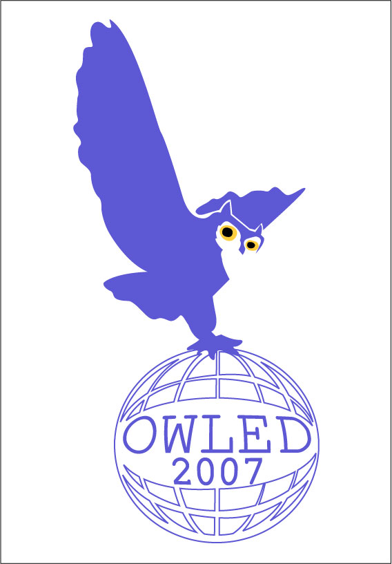

OWLED 2007
OWL: Experiences and Directions
Third International Workshop
6-7 June 2007
Innsbruck, Austria
Panels
Format
The objective is to have an open and exciting discussion involving both
panellists and audience. To start the discussion, the moderator will
put to the panel a short list of questions on "hot topics" (see
below). Each panellist will then have a few minutes/slides (maximum 3
minutes/3slides) to summarise his/her response to the questions and/or
view on the topics (please note that, in order to ensure that there
is ample time for discussion, the moderator will strictly enforce the
3 minute/slide limit). There will follow an open discussion in which
both members of the panel and the audience will be invited to join
the discussion and/or put further questions to the panel.
Panel 1: SPARQL, Rules and OWL ?
Moderator: Peter Patel Schneider
Panellists
- Sandro Hawke (W3C)
- Maryann Martone (BIRN Ontology Task Force)
- Boris Motik (University of Manchester)
- Bijan Parsia (Clark & Parsia)
- Riccardo Rosati (Universita' di Roma La Sapienza)
- Suzette Stoutenburg (MITRE Corporation)
Questions/topics
- Topic 1: Query language
Do existing query languages meet your needs ? What else would you wish ?
What is possible according to current state of art?
- Topic 2: Rules
What rule language and rule engine are you using ? are they satisfying ?
Is it important for you to guarantee completeness and termination?
Please feel free to suggest additional topics of interest and/or
questions that you would like added to the list.
Panel 2: What is needed in Industry: new extensions, editors, tools … ?
Moderator: John Goodwin
Panellists
- Henson Graves (Lockheed Martin Aeronautics Company)
- Ralf Moeller (Racer Systems GmbH & Co. KG)
- Anne Monceaux (EADS)
- François-Paul Servant (Renault)
- Walter Waterfeld (Software AG)
- Patrick West (High Altitude Observatory)
Questions/topics:
- Topic 1: What extensions?
What are your most pressing expectations: new extensions e.g.,
constraints, rich annotations, n-ary, time, fuzziness? macros ? procedural
attachments? rules?
- Topic 2: What type of assistance would be helpful?
What are the biggest difficulties met in the development of OWL
applications?
What would facilitate the adoption of OWL: editor, natural
language, documentation, tutorials ?
Please feel free to suggest additional topics of interest and/or questions that you would like added to the list.
Panel 3: Life Sciences: Lessons, Formats, Future Developments?
Moderator: Christine Golbreich
Panellists
- William Bug (BIRNLex)
- Michel Dumontier (Department of Biology, Carleton University)
- Chris Mungall (Gene Ontology)
- Alan Rector (GALEN)
- Kent Spackman (SNOMED)
- Holger Stenzhorn (BioTop, Aneurist and ACGT)
Questions/topics:
- Topic 1: Formats
What are the respective advantages of formal and semi-formal ontology
languages for the Life Sciences?
Would it be beneficial to have alternative formats ? to integrate them ?
- Topic 2: Expressivity and tools requirements
Are OWL DL or OWL1.1 enough for biomedical ontologies or what should be added?
What would facilitate the use of OWL to the biomedical community ?
Please feel free to suggest additional topics of interest and/or questions that you would like added to the list.